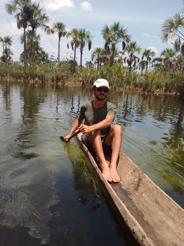

| Home | Papers | Handouts | Classes | Tools |
|  | e-mail: | rafaelngmail.com | Profile at MIT News | |
| paper-mail: | PPGAS – Museu Nacional – UFRJ Quinta da Boa Vista s/n, São Cristóvão Rio de Janeiro/RJ Brasil Cep 20940-040 |
Google Scholar | ||
| Curriculum Vitae | ||||
| I became a linguist out of fascination for weird languages. Nowadays I don't think there are weird languages anymore, and I spend my academic time arguing that languages only seem weird if you don't look at them the right way. I got my Bachelor's and Master's from Unicamp, in Brazil, and my PhD from MIT, in the US. I have been working on the documentation of Brazilian Indigenous languages since I was a sophomore and I have unfortunately become the greatest world specialist in Brazilian languages Bororo (topic of my Master's thesis) and Kĩsêdjê (topic of my Phd thesis). The reason why this accomplishment is unfortunate is the fact that it is trivially true---there is nobody else studying these languages. | ||||